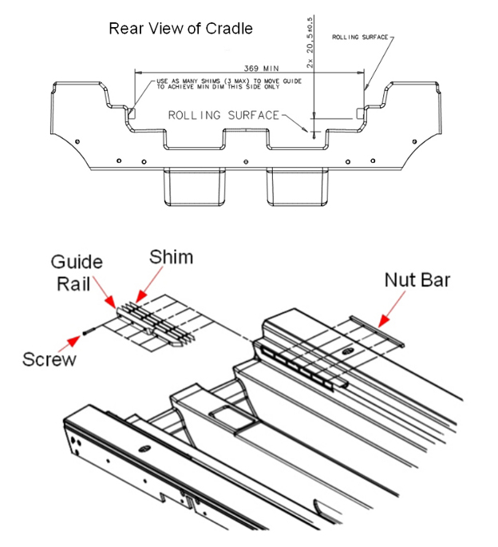

- 00000018WIA3005BE20GYZ
- id_131072522.10
- Aug 3, 2022 11:00:32 AM
Replacing the cradle guide rail
Replace the cradle guide rail, which is locked in the home position with a latch on the patient table bridge. The latch engages a notch on the cradle guide rail at the rear of the table.
Prerequisites
| Personnel requirements | |||
|---|---|---|---|
| Required persons | Preliminary requirements | Procedure | Finalization |
| 1 | - | 30 minutes | - |
| Tools and test equipment | |||
|---|---|---|---|
| Item | Quantity | Part number | Manufacturer |
| Nonmagnetic Titanium Service Tool Kit, Large Set | 1 | 5112581 | - |
| Replacement parts | |||
|---|---|---|---|
| Item | Quantity | Part number | Manufacturer |
| Guide Strip (Left-Hand Guide Rail) | 1 | 5213295 | - |
| Guide Strip (Right-Hand Guide Rail) | 1 | 5213295-2 | - |
| Shim Guide Rail Tabletop | 1 to 3 | 5392488 | - |
Overview
About this task
This procedure describes how to replace the cradle guide rail. The cradle is locked in the home position with a latch on the patient table bridge. The latch engages a notch on the cradle guide rail at the rear of the table. The latch on the cradle should engage this notch just enough (without extra force) so when the cradle is pushed to the home position, it tightly engages the notch to prevent the table top from moving when the patient table is undocked. In certain situations, it may be necessary to add up to a maximum of three shims to achieve a minimum distance of 369 mm.

Removing the guide rail
Procedure
- Note:To get access to the guide rail, move the cradle back (into the magnet).
Two guide rails (left-hand and right-hand) are used to guide the cradle when moving the cradle forward and backward on the table top. Five screws secure each guide rail to the table top. Each screw mounts through the guide rail and table top to the nut bar. The nut bar is NOT secured to the table top.
To prevent the nut bar from dropping into the table top, always have two screws mounted. Carefully follow each step in this procedure to make sure the nut bar does not drop into the table top during removal or installation. If the nut bar drops into the table top, the bottom panel of the table top must be removed to retrieve the nut bar.
Figure 2. Moving the cradle back  Note:
Note:Two screws in the narrow part of the guide rail should remain installed.
- Using a 7/64 inch Allen wrench, loosen each of the three screws and remove them from the wide part of the guide rail.
Figure 3. Removing screw from guide rail  Note:
Note:The nut bar is not secured to the table top. Always keep at least two screws mounted into the nut bar. If the nut bar drops into the table top, the bottom panel of the table top must be removed to retrieve the nut bar.
- Lift up the guide rail and install the screw (approximately three or four turns) into the first screw hole of the nut bar.
Figure 4. Screw installed in first hole of nut bar 
- Remove the fourth screw from the narrow part of the guide rail.
Figure 5. Location of fourth screw 
- Lift up the guide rail and install the screw (approximately three or four turns) into the fourth screw hole of the nut bar.
Figure 6. Location of fourth hole of nut bar 
- Remove the fifth screw from the guide rail, and remove the guide rail from the table top.Note:
The nut bar will tilt down with the two screws installed.
Figure 7. Nut bar with two screws installed 
Installing the guide rail
About this task
Two guide rails (left-hand and right-hand) are used to guide the cradle when moving the cradle forward and backward on the table top. Five screws secure each guide rail to the table top. Each screw mounts through the guide rail and table top to the nut bar. The nut bar is not secured to the table top. To prevent the nut bar from dropping into the table top, always have two screws mounted. Carefully follow each step in this procedure to make sure the nut bar does not drop into the table top during removal or installation. If the nut bar drops into the table top, the bottom panel of the table top must be removed to retrieve the nut bar.
Procedure
- Remove the screw from the fourth hole of the nut bar.
Figure 8. Removing fourth holding screw 
- Aligning the fourth hole of the guide rail with the fourth hole of the nut bar, install the screw through the guide rail and into the nut bar. Do not tighten the screw at this time.
Figure 9. Installing screw in fourth hole of nut bar